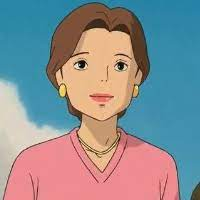

Yūko Ogino
Yūko Ogino é uma mulher da classe trabalhadora, esposa de Akio Ogino e mãe de Chihiro Ogino no filme de animação japonês "A Viagem de Chihiro". Como punição por seus crimes contra o Mundo dos Espíritos, Yūko é amaldiçoada e transformada em porco durante grande parte do filme.
Personalidade
Inicialmente, ela parece ser uma mulher muito calma e lógica, que se recusa a obedecer às curiosas artimanhas do marido e é sempre a primeira a falar de segurança em sinal de perigo ou estranheza; no entanto, ela rapidamente cede à aventureira Akio Ogino, assim cometendo um crime contra o Mundo dos Espíritos e sendo transformada assim como seu marido em porco durante quase todo o filme.
Aparência física
Yūko tem a pele levemente bronzeada como seu marido e sua filha. Ela tem o cabelo curto e castanho, sobrancelhas finas e olhos pequenos de cor escura. Ela está bastante em forma, comparada com seu marido, e usa brincos de ouro, assim como um colar de ouro e batom. Ela veste uma camiseta rosa e calça branca tipo capri.